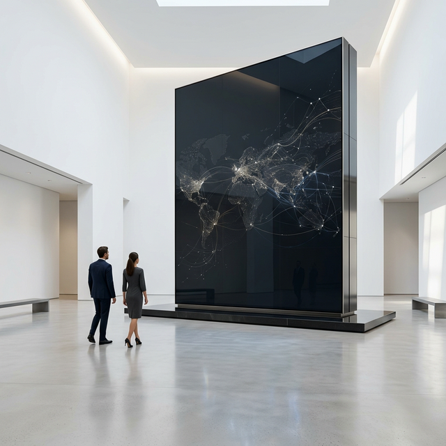

BeMe 本質を突くキャリア
社会の表面的な期待を捨て去り、自らの本質（Be）と主観（Me）に圧倒的な解像度で向き合う。
我々は、予定調和な就活市場を破壊し、事業を力強く推進する本物のビジネスパーソンを輩出します。
情報非対称性の
破壊。
THE DESTRUCTION OF ASYMMETRY
表面的な企業理解ではなく、事業の真の課題と個人の本質的なキャリア観をマッチさせる。それが私たちの使命です。
本質からの
逆算。
RADICAL ESSENTIALISM
自己認識の深化からビジネススキルの社会実装までを、高いデザイン性と独自のコミュニティ力でシームレスに伴走し、予定調和な就活市場を破壊します。
BUSINESS DOMAINS
事業内容

就活イベントの運営
HIGH-END
NETWORKING
業界の最前線と交差する、圧倒的高密度なシークレット空間を提供。不特定多数に向けられた一方的なプレゼンではなく、第一線で活躍するビジネスパーソンと直接対話を生み出します。
- 完全審査制によるクオリティコントロール
- CxOクラス登壇の極秘セッション
- 本質的なケーススタディと即時フィードバック

就活SNSの運用
DIGITAL
INFLUENCE
累計150万再生を超える、就活市場のリアルを切り撮る影響力。TikTokの直感的なショート動画から、Instagramの論理的な図解解説まで、アルゴリズムをハックして学生の行動変容を促します。
- Z世代特化のアルゴリズム最適化運用
- インサイト分析に基づくロジカルコンテンツ設計
- 潜在層から顕在層への精緻なファネル構築

長期インターンの事業
PRACTICAL
EXECUTION
自己分析で終わらせない、実務を通じた本物のビジネス戦闘力育成。新規事業立案や連携企業からのリアルな事業課題解決にアサインされ、戦略構築から泥臭い実行フェーズまで一貫して経験します。
- トップティア企業水準のPJマネジメント
- 徹底的なROI追求と泥臭い実行フェーズ
- 現役プロフェッショナルによる直接メンタリング
EXECUTIVE BOARD
代表挨拶・役員

代表・大石
「挑戦を持続可能な形にする」というビジョンを掲げ、表面的な就活市場のあり方に一石を投じるためBeMeを創設。
企業が本当に直面している事業課題と、個人が心の底から求めている「熱狂」を直結させるプラットフォームが必要だと強く実感したのが始まりです。小手先の面接テクニックやテンプレート化された自己分析ではなく、真の意味での「ビジネス戦闘力」と「人間的魅力」を育む環境を提供します。
私たちが目指すのは、ただの就職支援ではありません。圧倒的な基準で社会をアップデートし続ける、次世代のビジネスリーダーの輩出機関です。

副代表・清水
大局的なビジョンを具体的なプロセスとKPIへと落とし込む実行責任者。無数の選択肢から最適解を導き出し、チーム全員が迷いなく走れるオペレーションを構築する。

田中（メディア統括）
BeMeの誇るSNS・メディア事業の全体設計を担う。アルゴリズムの深掘りからユーザー心理の分析まで徹底し、「伝わる」から「動かす」コンテンツを生み出し続ける。